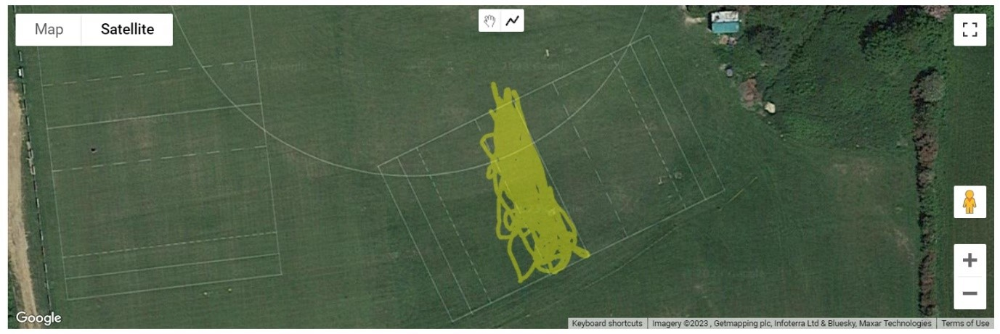
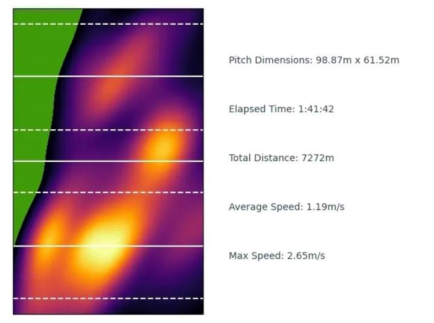
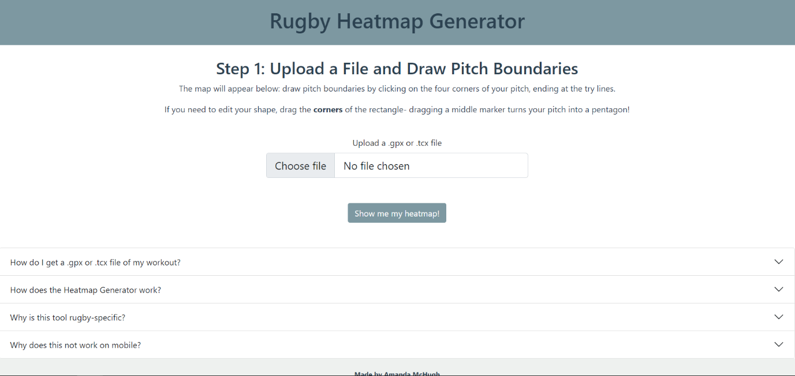
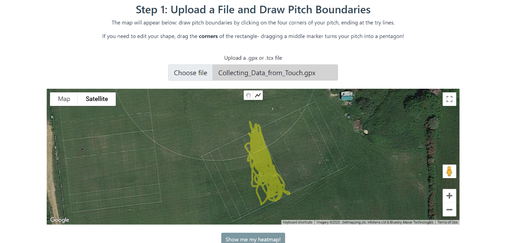
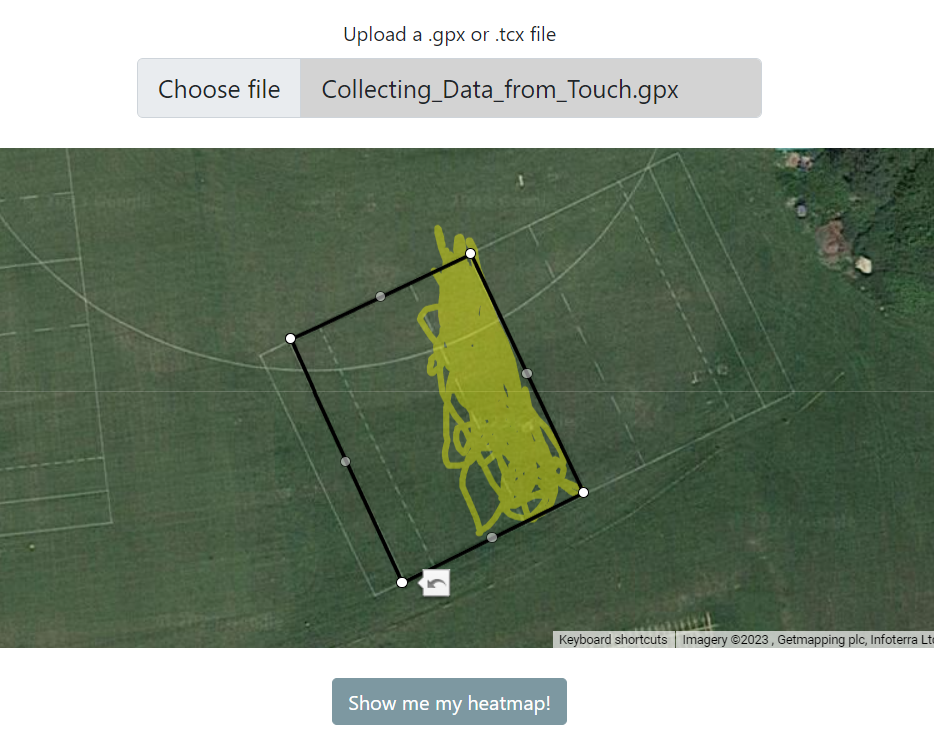
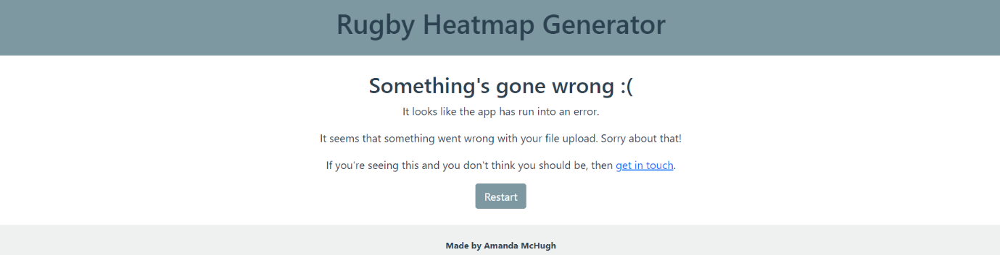

Rugby Heatmap Generator
Visualising GPS Rugby Data with Flask
What is it, and why was it built?
I started playing rugby after coming from rowing, where telemetry and data to analyse are readily available, from power curves in each stroke to GPS speed data in races. Very quickly, I realised that there were very few freely-available data tools for grassroots rugby that would enable me to see how my performance changed and improved, particularly in training sessions.
The next step to start filling the gap was to contemplate both what was feasible, and what required the minimum of extra equipment to be accessed. Inspired by some rowing friends, who used to put their phones in sandwich bags to record on-water rowing sessions on Strava, I realised that I could build a GPS application that recorded pitch position that didn’t even require users to have a GPS watch. Since rugby is a position-dominated sport, I thought it useful to see a heatmap of where I found myself on the pitch, and how much time I spent in that position, as well as some numbers to give me more information about speed, time, and distance covered. The other thing that I wanted this application to do was respond to the size of the pitch, and display the heatmap on a rugby pitch marked appropriately for size and according to the actual boundaries of the pitch that the user was playing/training on.
Different applications use different GPS file types, and the two most common file types are .gpx and .tcx. The application therefore had to be able to adapt to both, to expand the user base as wide as possible.
Therefore, the application was built to fill the gap in freely-available rugby data visualisation, using .gpx and .tcx files recorded from any device (sports watch or phone), and responding to the size and proportions of the pitch that the user needed.
How does it work?
The app predominantly functions using Flask (Python), with front-end HTML/CSS and JavaScript, the latter of which helps to collect the pitch information for use in the Flask app. The first stage is the user chooses a file from their sports watch desktop site or from Strava, and uploads it to the app. Automatically, a Google Map will appear (as in the image), with their GPS data presented as a yellow scribble. To show the scribble, the file has to be converted from gpx/tcx to GeoJSON, which is done upon file upload using asynchronous JavaScript and a library that allows file conversion to GeoJSON. Since require cannot be used in web applications, this application also had to make use of webpack bundling to ensure that the libraries could be used.
Once the scribble and map are visible, the user can use the Drawing Manager tools in the Google Maps API to draw the outline of the pitch by clicking on its corners. The drawing tools automatically disappear when the polygon is completed, so that the user cannot draw several shapes. If there is an issue with the number of corners on the shape (i.e., more or less than four), the app displays an error page when the user clicks to go to the next stage. Similarly, if there are any issues with the file upload (incorrect type, different from expected, etc.), the app will display an error page.
Once the user has outlined their pitch and clicked the button to proceed to the next page, several things occur in the background. Firstly, the southernmost coordinate of the pitch is determined, and the angle between the southernmost coordinate and the next nearest is calculated using basic trigonometry, to determine by what angle the pitch needs to be rotated before it is displayed to the user. Using this angle, the four corners of the pitch and every point collected in the GPS file (read with the use of a TCX and a GPX parser) are rotated and stored. Additionally, the distance between the southernmost coordinate and its closest coordinate is calculated, as well as the distance between the southernmost coordinate and the coordinate that forms the longer edge of the pitch.
The heatmap is created using a combination of Matplotlib and Seaborn. The pitch lines are calculated by creating horizontal lines across a graph (the background of which is made to be green). The solid white halfway line is present, and the ten metre (dashed), five metre (dashed) and 22 (solid) are added when the pitch meets certain length requirements, as is the case on real pitches. The top and bottom of the graph are taken to be the two try lines, and there is no dead ball zone on the graph, as these can vary in length. The heatmap itself is a KDE plot, created using Seaborn. The edges of the pitch are calculated with the origin of rotation, as well as the rotated coordinates taken from the Google Map.
.png)
The graph is displayed alongside a second subplot, which gives the user information about the dimensions of the pitch that they were playing on, as well as how long they were playing for, how far they ran, and the average and maximum speeds (this heatmap, as well as the Google Maps scribble, are taken from a touch rugby session where I clearly did not do very much apart from hang out on the wing!). The GPX parsing library filters out the top 5% of speeds, as these can be taken as GPS recalibration errors, and the Seaborn KDE plot does not show everywhere a person goes on the pitch, only to a level of detail that is relevant, otherwise the heatmaps become too muddled.
The heatmaps are not just useful for players; referee heatmaps can also give insight into where the main points of action and contest during a game were, and which end of the pitch was most used.
The plot is displayed to the user as an image, and a button on the web app allows them to download the image with one click.
The HTML/CSS frontend uses Jinja2 templating to make it easier to create pages within the web app, and interactive features such as the accordion FAQs at the bottom of the main page are written with the help of Bootstrap. Development was done using Git and the Command Line.
Interested in testing it? The app is being hosted on Azure (using the command line tool to upload), at the link here. Below are some screenshots of the website, in case it fails to respond (when it has been left inactive for several days, the app does not load):
You can also find the source code at my Github site.

Main page

Automatically displaying scribble with Google Maps API

Drawing the pitch boundaries

Generated Heatmap

Error page; error type specified using Jinja2 templating